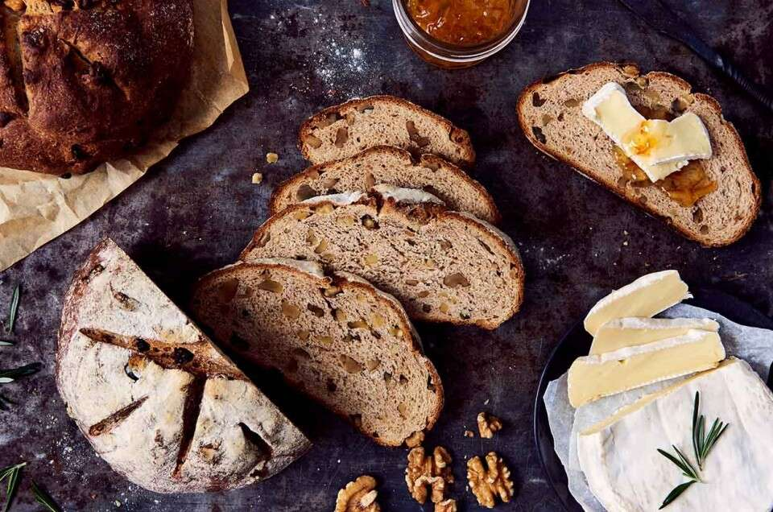

This French-style yeasted bread is traditionally prepared with wheat or whole wheat flour and coarsely chopped walnuts that are kneaded in the dough, while some varieties may also incorporate other nuts, typically coarsely chopped hazelnuts. It is usually shaped into plain or round loaves and is characterized by its dark brown crust and a light brown interior which is dotted with walnut kernels.
Meal prep time : 2 hours 30 minutes
Servings : 2